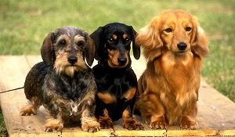

También informalmente llamados perros salchicha por su particular fisionomía. Son excelentes perros tanto para seguir rastro, levantar la caza o encontrar la pieza una vez derribada.
Los Teckel pueden ser de diferente tono de pelaje, destacar que hay que tener cuidado con los arlequines a la hora de hacer cría
| Variedades | |||
|---|---|---|---|
| Colores: | Negro | Marron | Arlequin |
| Tipos de pelo: | Corto | Largo | Pelo duro |
A continuación tres enlaces para obtener mas información